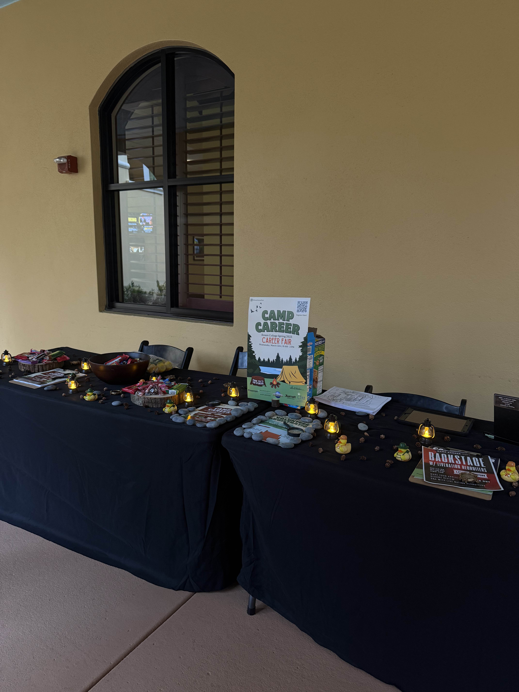
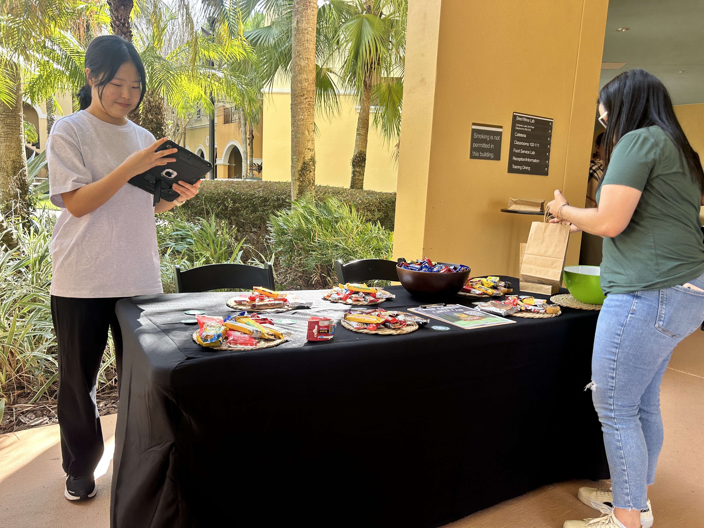
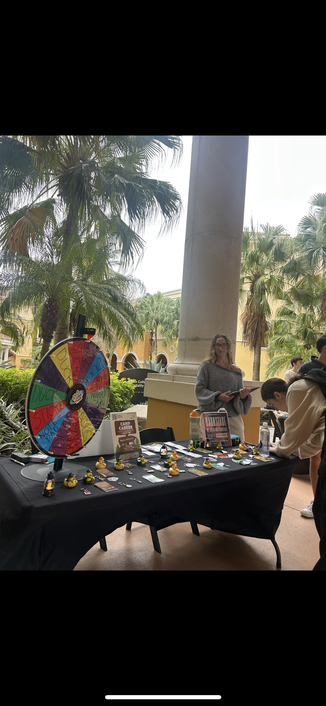
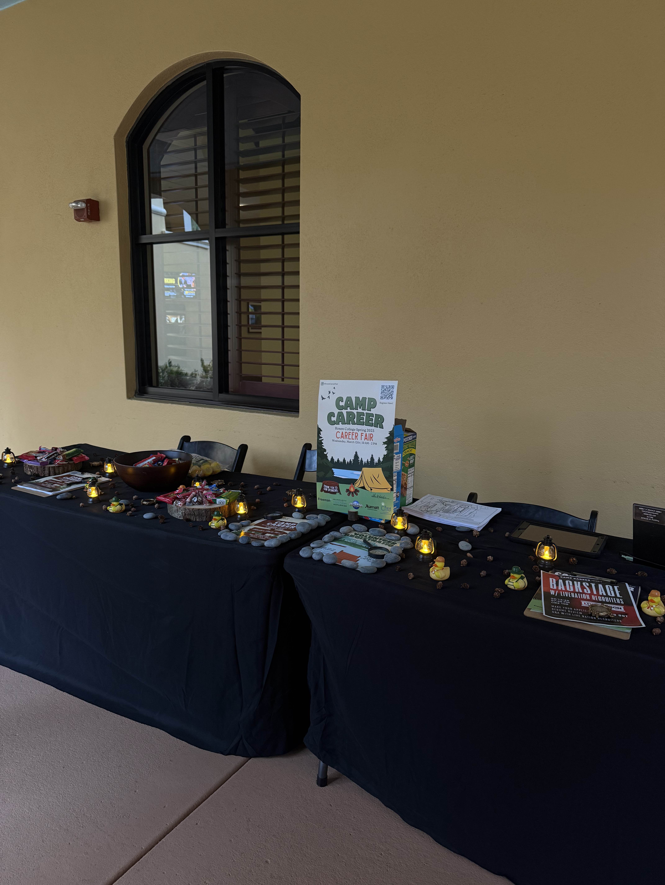
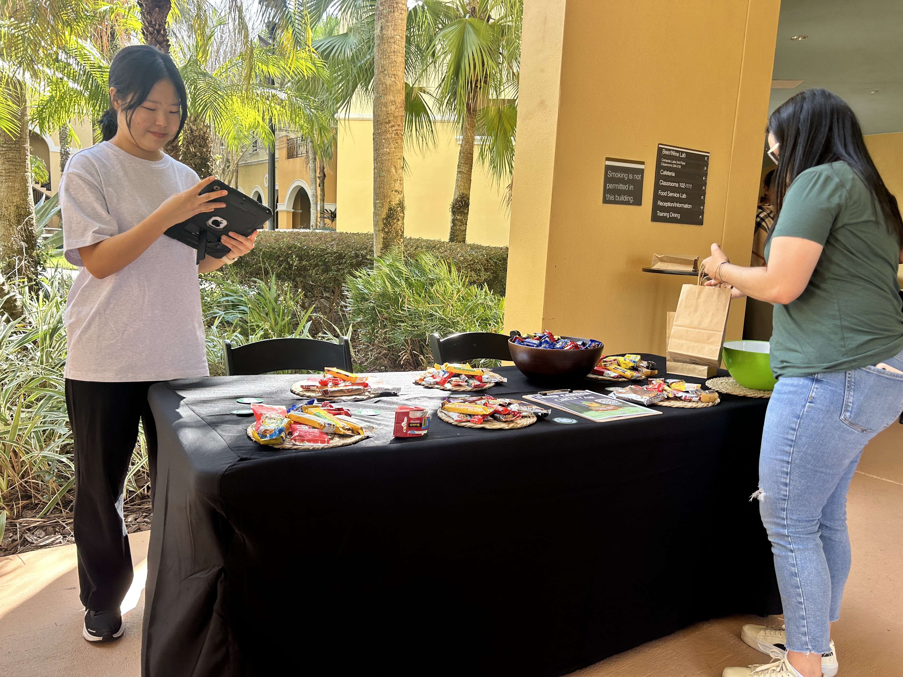
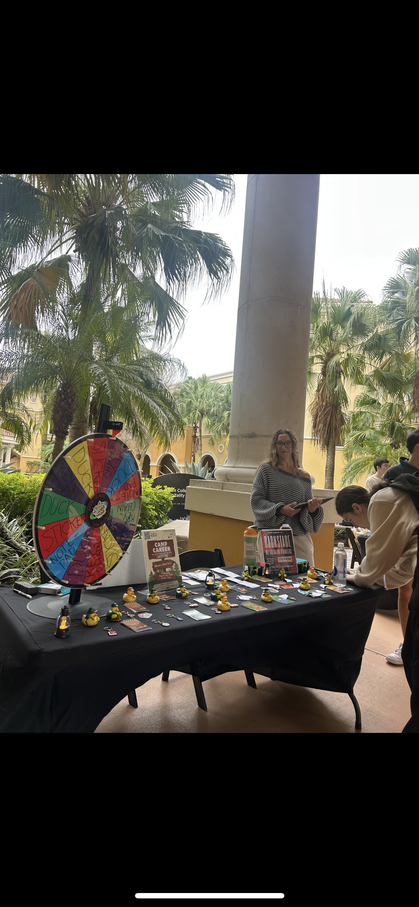
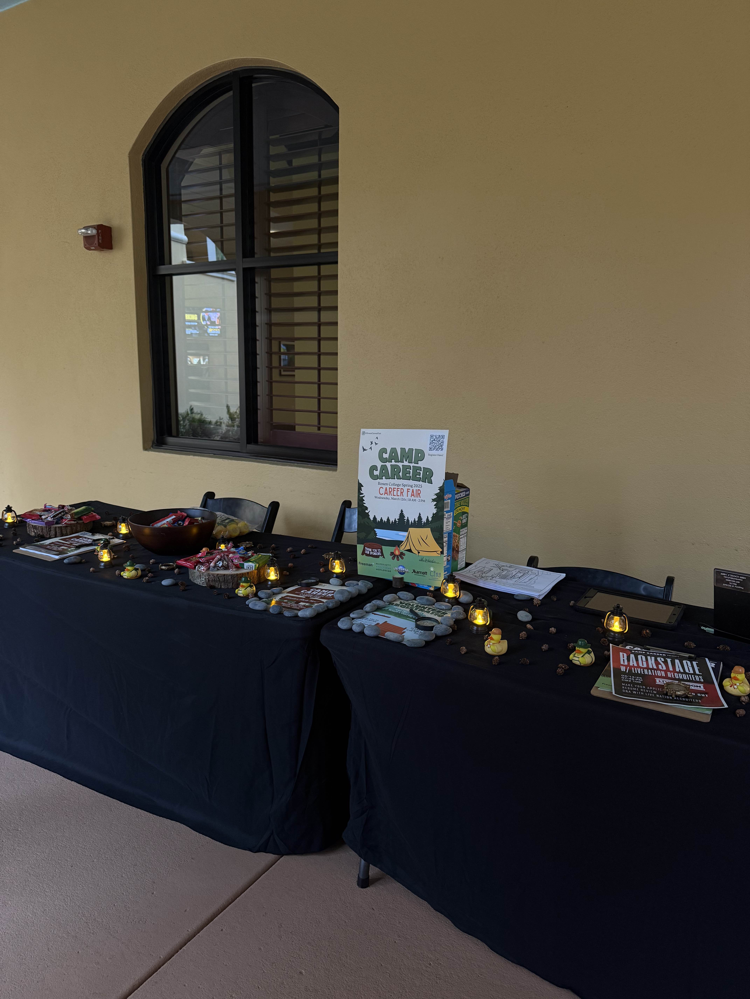
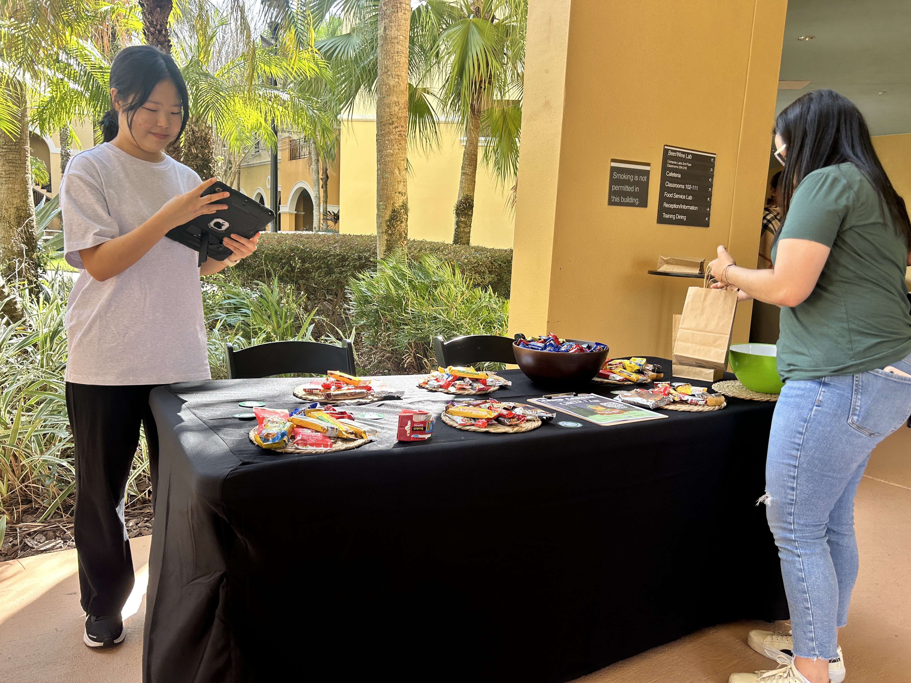
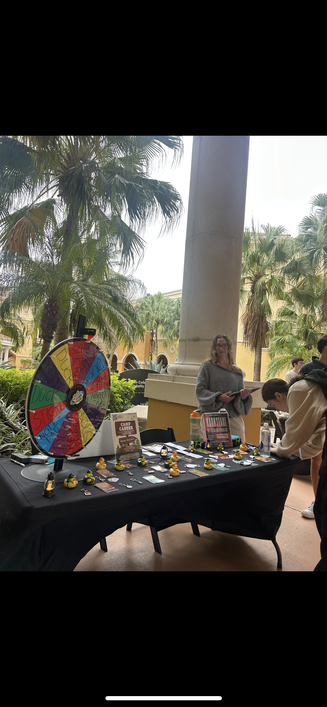

Tabling Days
Just a little chaos and a lot of charisma!
 






Career Fair Day-Of
This wasn’t just a day—it was the reward for months of intention.
Before

After


Just a little chaos and a lot of charisma!



This wasn’t just a day—it was the reward for months of intention.